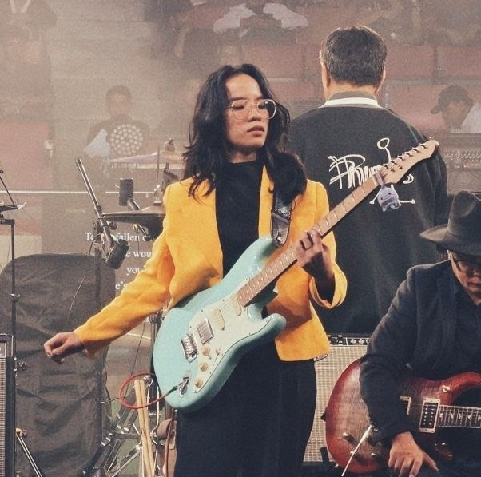

Hello, I'm
a Frontend Developer
An aspiring website developer currently focused on studying web design and frontend development.
Hi, I'm Elena, a second-year Bachelor of Science in Information Technology (BSIT) student at the Polytechnic University of the Philippines – Parañaque Campus.
I am currently developing my skills in frontend development and exploring ways to create responsive, user-friendly, and visually appealing websites.
I am passionate about combining creativity and technology to build meaningful digital experiences. Aside from coding, I enjoy photography and music, which help me enhance my creativity, attention to detail, and ability to express ideas through different forms of art.
Bachelor of Science in Information Technology (BSIT)
2025 - Present
Bachelor of Science in Information Technology (BSIT)
2024 - 2025
Science, Technology, Engineering and Mathematics (STEM)
2020 - 2022
Email: elenaclorafel919@gmail.com
Phone: +63 995 252 3249
Location: San Isidro, Parañaque City, Philippines
Facebook: Elena Clorafel
Instagram: @elnclrfl
Github: clrms